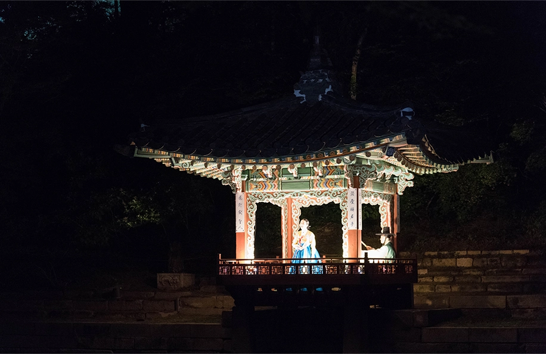
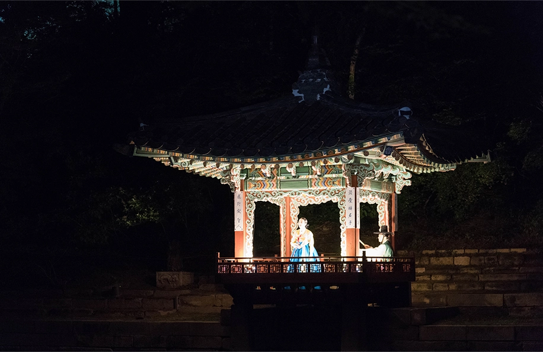

- 창덕궁 -
ON 달빛기행
집에서 즐기는 달빛기행
ABOUT PROGRAM
“조선시대 왕들에게 가장 많은 사랑을 받았던 궁이 어디인지 아시나요?”
바로,
서울의 5대 고궁 중 하나로 어느 계절에나 아름다움을 선보인다는 창덕궁입니다!
 

은은한 달빛 아래 녹음이 어우러진 창덕궁에서 청사초롱 불을 밝히며
궁궐 곳곳에 숨겨있는 옛이야기를 들어보고 싶지 않으신가요?
어둠이 내려앉은 도심 속 고요하게 불을 밝힌 고궁의 야경을 집에서 만나보세요.
< 창덕궁 달빛기행 >이 여러분을 기다립니다.
ON 달빛기행 미션!
배달된 달빛기행 VR 키트를 열어 VR 카드보드와 DIY 청사초롱을 만들어보세요.
완성된 카드보드, 청사초롱과 함께 생생한 360° VR 영상을 시청한 뒤,
창덕궁을 즐기는 나의 모습을 궁 온 체험 후기 페이지에 올리면 달빛기행 기념품이 집으로 찾아갑니다!
또한, 창덕궁을 직접 방문한 것처럼 생생한 인증사진(합성사진)을 만들 수 있는 기회도 드립니다.
ON 달빛기행 온라인 체험 방법
1) VR 카드보드 조립
2) DIY 청사초롱 제작
3) 한 손에 청사초롱을 들고 VR 카드보드를 착용하여 360° VR 영상 시청
4) *미션 완료 후 후기 이벤트를 통해 기념품 및 사진 증정
*미션 : 청사초롱을 들고 카드보드를 착용한 뒤 영상을 시청하고 있는 사진 올리기

쉽고 빠른 온라인 예약으로
편리하게 궁궐 온라인 프로젝트를 신청하세요!
네이버 한 ID당 한번만 참여가 가능합니다.
· 문의 : 궁온 운영 사무국 02-517-6253